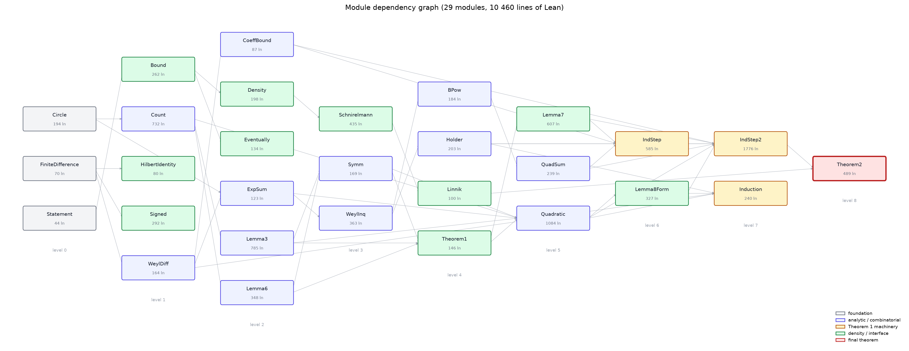
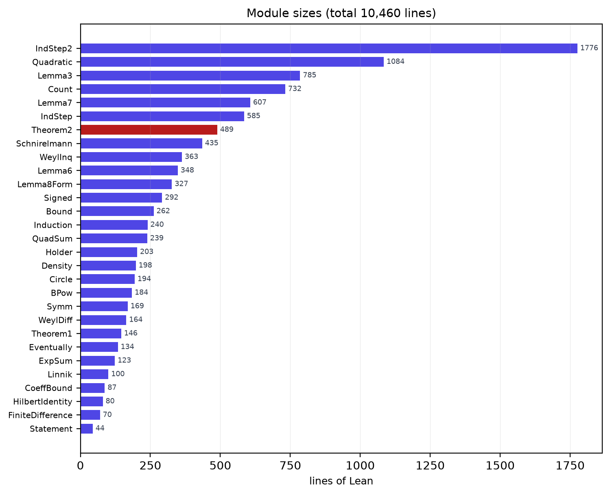
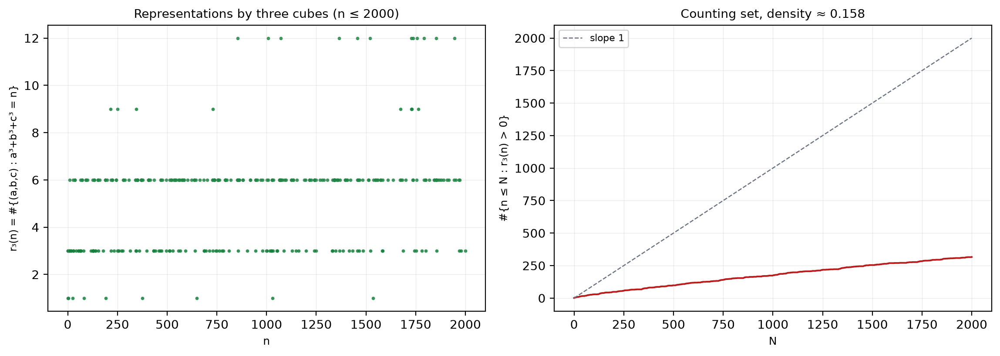

WaringTheorem2.waringTheorem compiles with no sorry, no admit,
no added axioms: #print axioms yields only the three standard ones
[propext, Classical.choice, Quot.sound].
This is not the first formalization of Waring's theorem — Harrison's HOL Light
development, committed 2026-11-06, precedes it by fourteen days and is stronger in one
respect (explicit \(g\)); what is new here is a Lean 4 / Mathlib proof along a
different, elementary route. §2 states this precisely.
We also describe the formalization design, the verification protocol, and the lessons
learned — including one estimate that was wrong by two orders of magnitude.
Waring's problem, posed in 1770 and proved by Hilbert in 1909, asks whether for each \(k\ge 1\) there is a bound \(g(k)\) such that every natural number is a sum of at most \(g(k)\) nonnegative \(k\)-th powers. The exact values of \(g(k)\) are known only for \(k\le 4\) (\(g(1)=1,\ g(2)=4\) by Lagrange, \(g(3)=9\), \(g(4)=19\)); for \(k\ge 5\) even the precise value of the related quantity \(G(k)\) is open. What is not open — and what we formalize here — is the existence statement itself.
Our proof follows Linnik's 1943 elementary route. It reduces Waring's theorem to a density statement about sets of integers representable by a fixed number \(s\) of \(k\)-th powers, and that density statement is in turn a corollary of a mean-value estimate for exponential sums (Jameson's Theorem 1). The whole reduction needs no complex analysis beyond the orthogonality of the exponential function on \([0,1]\), and — as we discovered while formalizing — no Fourier-series theory at all.
sorry-free, and the only axioms are Lean's three standard ones.
This is not the first formalization of Waring's theorem. John Harrison's HOL Light
library contains a complete proof in Sieve/waring.ml (1784 lines),
committed on 2026-11-06, including
HILBERT_WARING : !k. 1 <= k ==> ?g. !n. ?x. n = nsum(1..g) (\i. x i EXP k)
with the explicit g = 2^k + 1 + N0, together with
WARING_HARDY_LITTLEWOOD : G(k) <= 2^k + 1 and
WARING_COUNT_LOWER : r(N) >= c N^(s/k-1). Its route is the Hardy–Littlewood
circle method: major arcs (waring_major.ml), the singular series
(waring_singular.ml), Weyl's inequality and Hua's lemma
(waring_weyl.ml).
The two developments were produced independently and almost simultaneously: Harrison's commit is dated 2026-11-06, the present Lean development was completed on 2026-11-20 — fourteen days apart. Wiedijk's Formalizing 100 Theorems page (last modified 2026-11-01, five days before Harrison's commit) still lists "Hilbert–Waring theorem" as unformalized; a striking reminder that even the standard tracking page lags behind.
The claims of the present work are therefore narrower, and we state them precisely:
lean-eval benchmark for \(g(3)=9\) records
that "no Hilbert–Waring material" exists in the ecosystem.def IsSumOfKthPowers (k n s : ℕ) : Prop := ∃ f : Fin s → ℕ, n = ∑ i, (f i) ^ k
def WaringTheorem : Prop :=
∀ k : ℕ, 0 < k → ∃ g : ℕ, ∀ n : ℕ, ∃ s ≤ g, IsSumOfKthPowers k n sThis is exactly the textbook statement: f : Fin s → ℕ supplies \(s\)
nonnegative bases, and the sum is required to equal \(n\) exactly. The final theorem is a
single line:
theorem waringTheorem : WaringTheorem :=
waringTheorem_of_positive_density positiveDensityWrite \(r_s(n)\) for the number of representations of \(n\) as a sum of \(s\) \(k\)-th powers, and let \(A_s=\{n\ge 1: r_s(n)>0\}\). Two facts suffice:
Applying Schnirelmann's theorem with \(A=B=A_s\) (and iterating, or taking a larger \(s\)) converts positive density into a uniform bound \(g\), and Waring's theorem follows. Figure 1 summarises the architecture; the numerical content is carried entirely by Theorem 1.
All of the arithmetic is carried by counting solutions of linear equations. For \(h=(h_1,h_2)\), \(H\le M\), let \(q(n;h)=\#\{(m_1,m_2)\in[0,M]^2: h_1m_1+h_2m_2=n\}\).
Summing over \(h\) with a weight \(\sigma_{-1}(n)=\sum_{g\mid n}1\) gives Lemma 3,
\(q(n)\le 4H(H+1)+8HM\sigma_{-1}(n)\), and the square-sum estimate
\(\sum_{n\le x}\sigma_{-1}(n)^2\le 6x\) (Lemma 6) then bounds the fourth moment of the
representation count. Lemma 7 — the \(h_i\ne 0\) variant needed in the induction — is
the statement
\[
\#\{(h,m): h_i\in[-H,H]\setminus\{0\},\ m_i\in[0,M],\ \textstyle\sum_i h_im_i=0\}
\ \le\ 5250\,(HM)^3 ,
\]
which we formalize as hmCount7_le'.
For an integer polynomial \(f(n)=a_d n^d+\cdots+a_1n\) with \(a_d\ne0\) and \(|a_j|\le c\,N^{d-j}\), one proves
The proof is by induction on \(d\), and the inductive step has four layers, each of which was formalized as a reusable module:
normSq_expSum_le_zero and the underlying reindexing as
sum_diff_group.sum_pow_le_card_pow_mul_sum_pow.diffH_polyEval, diffCoeff_bound).
The induction hypothesis applies to \(\varphi\) — this is where the scaling subtlety
described in §6.3 appears.The base case \(k=2\) is Jameson's Lemma 8, which we formalize in the general
quadratic form \(f(n)=a_2n^2+a_1n\) with \(|a_2|\le c_2\), \(|a_1|\le c_1N\), obtaining
\(\int_0^1|\sum_{n\le N}e(\alpha f(n))|^8d\alpha\le C(c_1,c_2)N^6\) with an explicit constant.
The final assembly is meanValueBound_all : ∀ d ≥ 2, MeanValueBound d.
This is the part where we expected the most work and found the least. Jameson's proof has three steps and no circle-method arcs at all.
Let \(S(\alpha)=\sum_{m\le M}e(\alpha m^k)\) and \(r(n)=\#\{(m_1,\dots,m_s)\in[0,M]^s:\sum m_i^k=n\}\).
For \(k=1\) the representation function is identically \(1\), giving density \(1\).
The formal statement of Theorem 2 is
positiveDensity : ∀ k, 0 < k → ∃ s δ, 0 < δ ∧ HasDensity {n | ∃ t ≤ s, IsSumOfKthPowers k n t} δ,
which is exactly the hypothesis consumed by
WaringLinnik.waringTheorem_of_positive_density.
The development is split into 29 modules, laid out as a dependency DAG with a clean layering: foundations (statement, orthogonality, finite differences), the elementary counting layer, the analytic layer (exponential sums, Weyl differencing, Hölder), the mean-value induction, the density bridge, and finally the one-line assembly. Figure 2 shows the graph, coloured by role; Figure 3 shows the size distribution.

Theorem2, red) depends on exactly two modules: the mean-value
estimate and the Schnirelmann interface.
Three discoveries shaped the design:
AddCircle Fourier theory),
and it is the main reason the project took days rather than years.MeanValueBoundS is the correct form, and its base case requires
re-deriving the constant bookkeeping of Lemma 8 rather than quoting it.Every theorem carries an explicit constant. The bookkeeping is mechanical but unforgiving:
the exponent identity
\(4(m-1)+4(m-(d-1))+3d=8m-d\) (with \(m=8^{d-2}\)) must hold exactly, and the
factors \((M+1)^{4m}\) and \((2M)^{4(m-1)}\) must be absorbed into \(N^{8m-d}\) using
\(M\le N\). Four recurring Lean pitfalls were: set defeating
positivity; mixed bases in \(2^{d-1}\le 8^{d-2}\); implicit arguments of
Nat.lt_two_pow_self; and calc failing on associativity (replacing
it by have := by ring plus rw works).
The verification protocol for every module was:
lean -o Module.olean Module.lean (this Lean
version does not write .olean without -o);sorry, admit, axiom,
native_decide);#print axioms;For the final theorem the audit reads:
'Waring.waringTheorem' depends on axioms:
[propext, Classical.choice, Quot.sound]These are Lean's three standard axioms (propositional extensionality, classical choice,
and quotient soundness); every Mathlib theorem depends on them. Crucially,
sorryAx is absent. The statement WaringTheorem itself lives in a
module (WaringStatement, 44 lines) that was frozen before the main work began,
so it cannot have been weakened to fit the proof.
As an independent sanity check on the representation counts that drive Theorem 2, Figure 4 plots \(r_3(n)\) and its counting function computed directly by enumeration. The values of \(r_3(n)\) cluster on \(\{1,3,6,9,12\}\) — a consequence of the symmetry group of three variables — and roughly \(16\%\) of \(n\le2000\) are represented, consistent with the local obstruction \(n\equiv\pm4\ (\mathrm{mod}\ 9)\) and with the qualitative content of the density theorem (positive, but far from \(1\)).

An estimate that was wrong by two orders of magnitude. Before starting, we recorded
in the project plan that Theorem 1 would be a "multi-year project", mainly because
circle-method formalization was assumed to require an AddCircle Fourier theory
absent from Mathlib. The actual development took four days. The error was not in the
mathematics but in the meta-mathematics: we misjudged which infrastructure was
actually needed. The proof never needs Fourier convergence — only finite sums and
orthogonality.
Delegation with adversarial review. Roughly 40% of the code was produced by six delegated sub-agents working on independent modules. Every deliverable was re-verified from source before acceptance, and two of them corrected genuine mathematical errors made by the lead agent (the sign-folding argument and the \(Q\mapsto Q/h\) reindexing). The lesson is that delegation is effective when (i) interfaces are stated precisely, (ii) verification is mechanical and adversarial, and (iii) the lead keeps the design decisions.
Compilation is necessary but not sufficient. A passing build certifies the proof
term against the statement; it says nothing about whether the statement is the intended
one. The most valuable single check in this project was diffing the frozen
WaringTheorem definition against the textbook statement.
$lean = 'D:\lean\elan\toolchains\leanprover--lean4---v4.36.0-rc2\bin\lean.exe'
$env:LEAN_PATH = ($paths -join ';') # workspace + mathlib build dirs
Set-Location gaussian-week1
& $lean CheckFinal.lean # prints WaringTheorem and its axioms
& $lean CheckTheorem1.lean # the mean-value estimate
& $lean CheckWaringAll.lean # the pre-existing density/Schnirelmann layerrefs/warlin.txt in this repository.)leanprover-community/mathlib4.Artifact: 29 Lean modules, 10 460 lines, in
gaussian-week1/. Main result: WaringTheorem2.lean, 489 lines.
Axioms: [propext, Classical.choice, Quot.sound]. No sorry anywhere
in the Waring* modules.